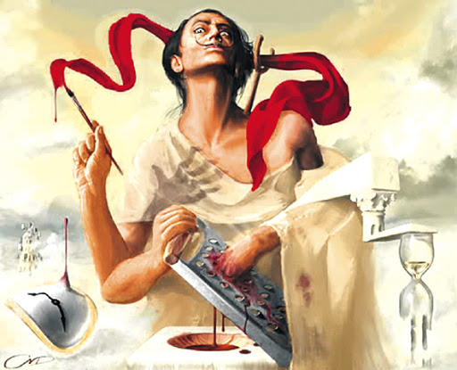

Вінсент Віллем ван Гог

Вінсент Віллем ван Гог народився в селі Гроот-Зюндерт у провінції Брабант на півдні Нідерландів. Його батьками були Анна Корнелія Карбентус еодор ван Гог, пастор Нідерландської реформаторської церкви. Йому дали ім'я на честь дідуся Вінсента ван Гога
Зіркове небо
Сальвадора Дали

11 травня 1904, Фігерас — пом. 23 січня 1989, Фігерас — каталонський художник скульптор, гравер письменник один з головних представників сюрреалізму ХХ століття
Пабло Пикассо

25 жовтня 1881, Малага, Іспанія — 8 квітня 1973, Мужен, Франція) — іспанський і французький художник, працював в основному у Франції, один із найвидатніших митців XX століття.
Credits by Ostrometska Mariya 10-A